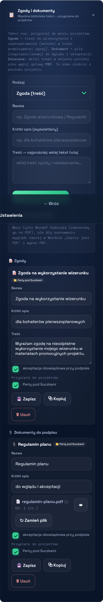

SignOff · Pomoc
← Spis treści
SignOff · Pomoc
← Spis treści
4. Zgody i dokumenty do podpisu
Tworzysz treść raz i przypinasz ją do dowolnych projektów. To jedno miejsce na wszystkie zgody i dokumenty — w aplikacji: ⚙ Ustawienia → „📋 Zgody i dokumenty".
Dwa rodzaje
- 📝 Zgoda — treść do przeczytania i zaakceptowania; wchodzi w treść podpisywanej zgody (osoba akceptuje ją checkboxem).
- 📎 Dokument — plik (regulamin, umowa) do wglądu i akceptacji przy podpisie.
Jak dodać

1Wybierz rodzaj (Zgoda / Dokument), wpisz nazwę i krótki opis.
2Dodaj treść — najprościej na jeden z dwóch sposobów:
- wklej tekst w okienko → ＋ Dodaj wklejony tekst, albo
- wgraj gotowy PDF → 📎 Albo wgraj PDF.
3Zaznacz, do których projektów ma trafić (jeden lub wiele).
Masz tylko Worda? Zadziała — aplikacja zamieni go na PDF. Ale przy bogatym formatowaniu (tabele, grafiki) wygląd może się uprościć. Dla pewności w Wordzie wybierz „Zapisz jako PDF" i wgraj PDF. Po wgraniu sprawdź wynik przyciskiem 👁.
Przypinanie, kopiowanie, edycja
Przy każdej pozycji widać tagi 📁 projektów, do których należy. Możesz ją:
- przypiąć / odpiąć od dowolnych projektów (zaznaczając projekty na liście),
- ⧉ Kopiuj — zrobić duplikat (np. lekko zmienić i dać do innego projektu),
- edytować (💾 Zapisz) lub 🗑 Usuń.
To samo z poziomu projektu
W Ustawienia → Firma i projekty w karcie projektu masz: „➕ Przypnij istniejącą", „＋ Nowa zgoda/dokument tu" oraz pełną edycję projektu (nazwa, własna treść zgody, administrator danych, kto może zbierać, zdjęcie obowiązkowe).
Ważne: już podpisane zgody się nie zmieniają — edycja treści w bibliotece dotyczy tylko nowych podpisów. Każdy podpisany dokument zachowuje swoją treść i sumę kontrolną.